01 — LED durum göstergeleriTıklayın
LED ne anlatıyor?
Cihazın üstündeki tek LED üç durumu gösterir. Bir satıra tıklayarak cihazda görün.
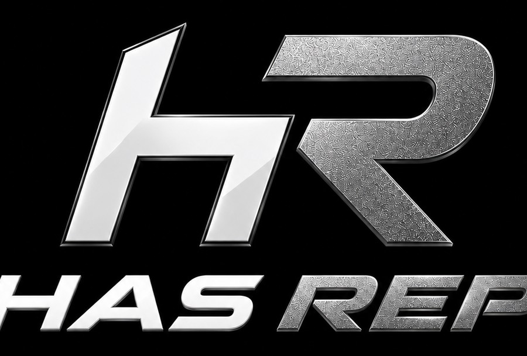
Bara takılan VBT cihazı hareket hızını ölçer ve tekrarları sayar; uygulama form analizi yapar, yapay zekâ ile antrenman oluşturur ve analiz eder.
Sporcu ve antrenör için tek sistem: sensör pod + iOS uygulaması. Antrenmanı başlat, telefonu bırak.
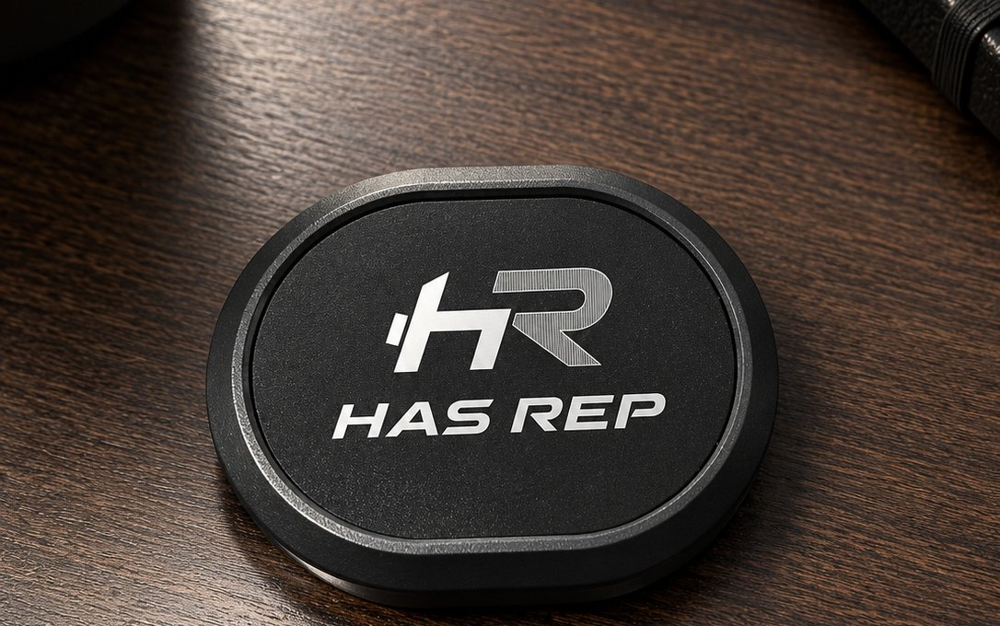
Hız temelli antrenman (VBT) yükü değil bar hızını yönetir. Has Rep bu hızı bara oturan kompakt sensörden okur; uygulama veriyi antrenmana çevirir.
Her tekrarın kaldırış hızını okur. Aynı yükte bar yavaşladıysa yorgunluk başlamıştır; hızlandıysa formdasınız.
Tekrarları cihaz kendisi ayırır ve sayar. Yarım tekrarı ve yeniden konumlanmayı saymaz; telefon cebinizde kalabilir.
Bar yolunu ve hareket kalitesini üç boyutta izler; sapan tekrarı işaretler, antrenöre ham izi bırakır.
Uygulama sizin verinizle antrenman programı oluşturur, her antrenmanı analiz eder ve gelişimi raporlar.
Antrenman boyunca telefona dokunmazsınız. Pod her tekrarı kendi hafızasına kaydeder; bağlantı kopsa bile veri kaybolmaz. Antrenman bitince senkronize edilir, uygulama emin olamadığı birkaç şeyi kart kart sorar — sağa kaydır doğru, sola kaydır düzelt. 30 saniye, bitti.
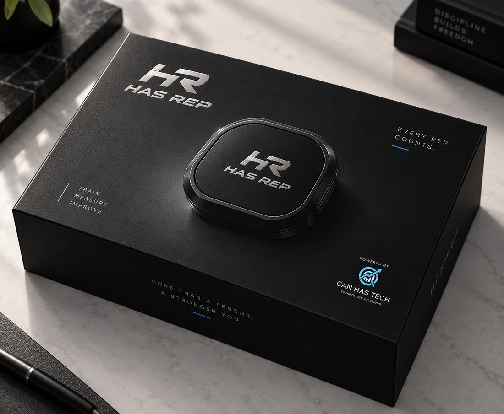
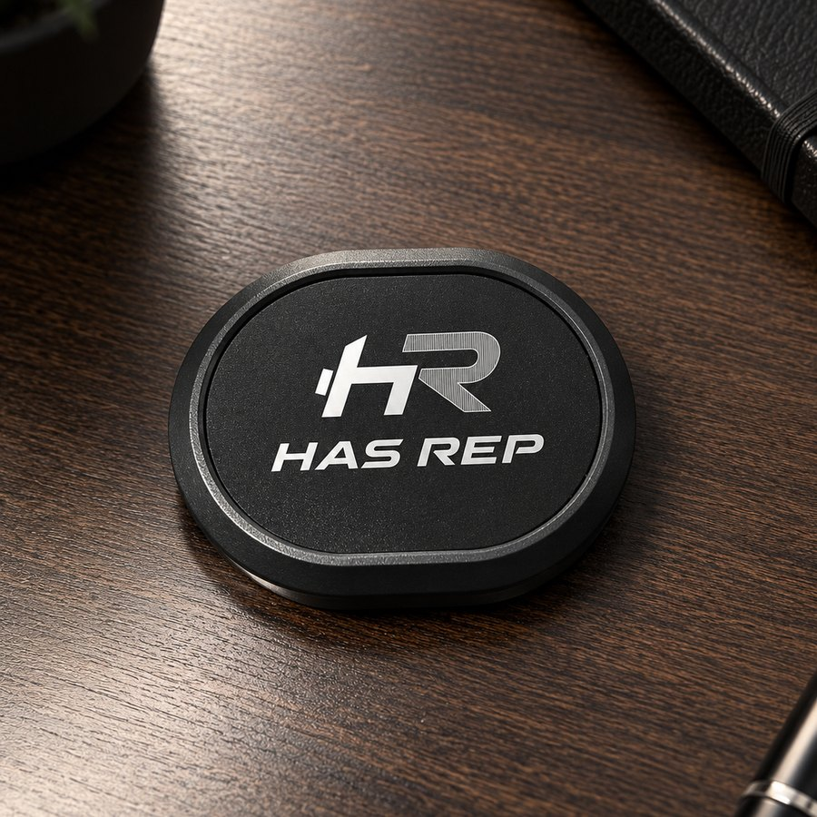
Gerçek uygulama ekranları. Canlı bar hızı, set özetleri, form analizi, kaydırmalı onay, kişisel rekorlar ve tahmini 1RM.
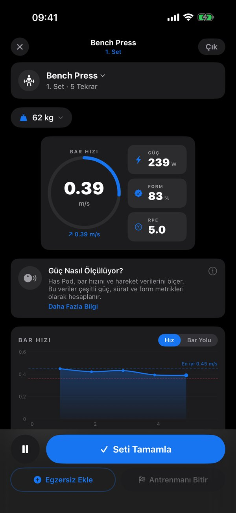
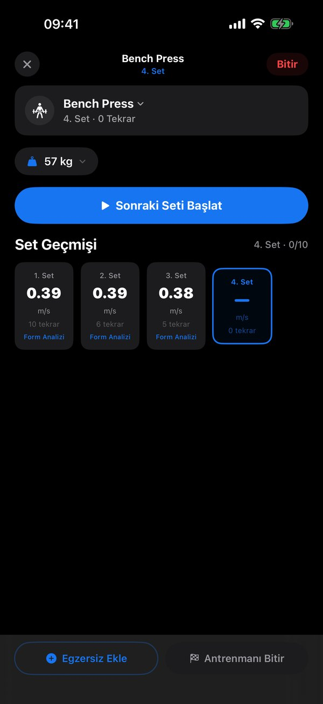
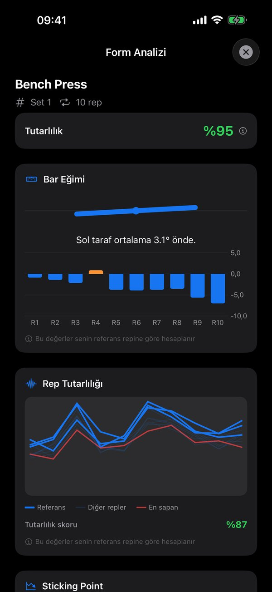
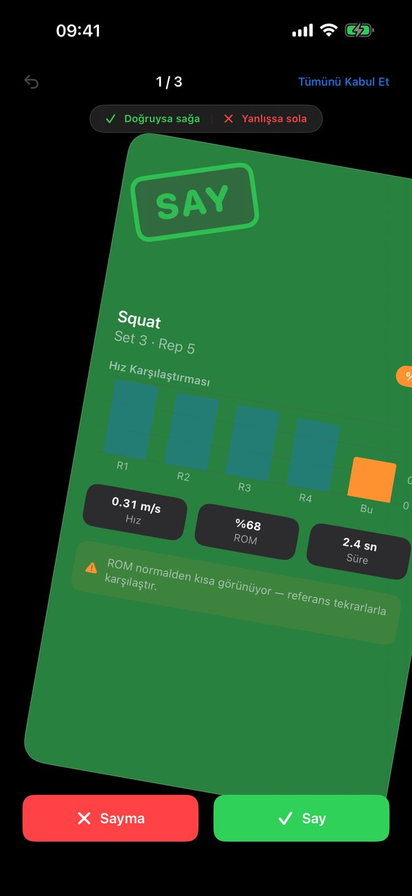
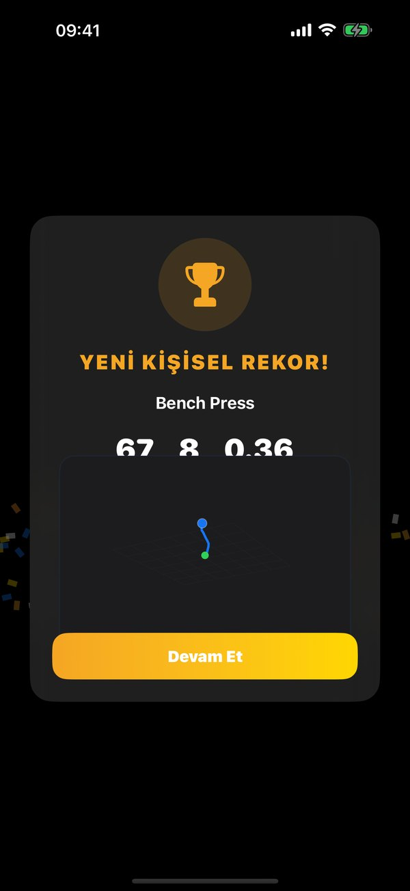
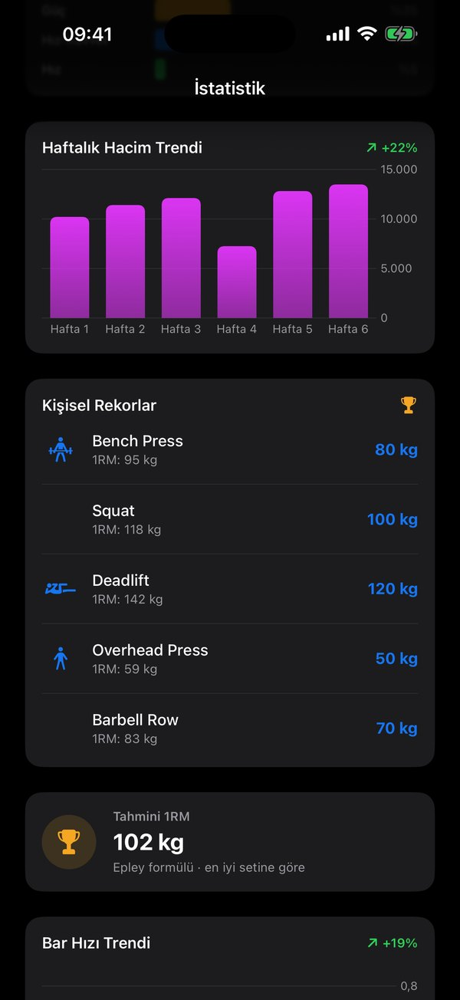
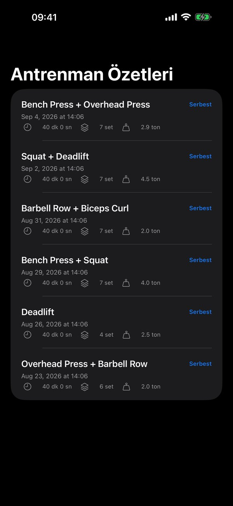
Cevabını bulamadığınız soru için WhatsApp ya da hasrep@canhastech.com.
LED ne söylüyor, cihaz nasıl uyanır, uygulamaya nasıl bağlanır. Kartlardaki düğmeler soldaki cihazı canlı olarak etkiler.
Cihazın üstündeki tek LED üç durumu gösterir. Bir satıra tıklayarak cihazda görün.
Has Rep kullanılmadığında pili korumak için uyku moduna geçer. Uyandırmak için düğmeye basmanız gerekmez: cihazı hafifçe sallamak yeterlidir. LED kısa bir kez yanıp söner ve cihaz bağlantıya hazır hale gelir.
Cihazı telefona bağlamak için Has Rep mobil uygulamasını açın, sağ üst köşedeki pod bağlama kısmına tıklayın ve cihazınızı eşleştirin.
Bireysel sporcu, antrenör ya da kulüp — formu doldurun, size demo planlayalım ve ilk parti sevkiyatta öncelik verelim.
İhtiyacınıza göre özel web siteleri ve mobil uygulamalar geliştiriyoruz. Kapsamı birlikte çıkaralım.
Projenizi anlatın